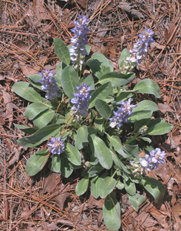

Previous || Next || Return to Mystery Plants || USC Herbarium
This Week's Mystery Plant | Dr. John B. Nelson Curator, USC Herbarium |
|
It's easy to spot this one, blooming now. It forms a clump or patch, with a number of sprawling stems, often matted together. The foliage is unmistakable, usually silvery-white or silvery-green, and because of this, the plants are conspicuous even without the flowers. The blossoms, though, are quite attractive, and carried on upright stems, these up to a couple of feet high. The flower's petals produce an intense shade of blue that is difficult to find elsewhere in our local flora. Each blossom has 5 petals arranged in a manner characteristic of many, many members of the bean family, and indeed, our Mystery Plant is placed in the bean family. The uppermost petal is the largest, and, since it is something like a flag, is sometimes called the "banner." If you take a look at a banner petal, you will notice a conspicuous whitish or cream-colored spot at its base. Two smaller, paired petals at the sides of the banner are the "wing" petals, and a second pair of similar petals is called the "keels." Inside the keels hide the 10 stamens and the single pistil. Some rather romantic botanists have likened this flower shape to that of a butterfly, and have thus come up with the term "papilionaceous" for this floral architecture. This species occurs widely throughout the midlands of South Carolina, and can also be found toward the Grand Strand. It is fairly common along roadsides in dry woods, for instance, in the vicinity of Poinsett State Park, or near Brookgreen Gardens, and the plants seem to thrive on the driest sands. If you want to grow some in your garden, you might try collecting some ripe seeds, but germinating the seeds may be a challenge. The plants do not transplant well at all, so don't even think about digging it up. |
 Photo by Linda Lee |